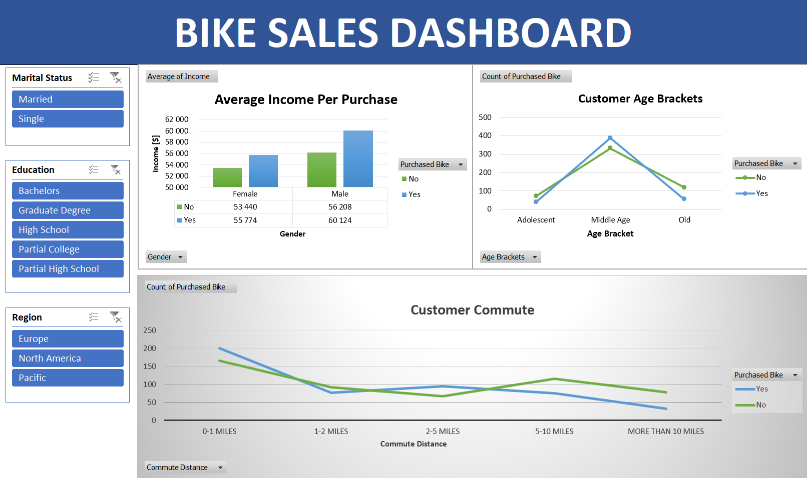

Details
Goals
- Identify Customer Segments:
Understand the demographics of bike purchasers to tailor marketing strategies effectively. - Analyze Purchase Patterns
Examine how factors like income and commute distance influence bike purchasing decisions. - Enhance Marketing Strategies:
Utilize insights to optimize advertising campaigns aimed at the most lucrative customer segments. - Support Inventory Decisions:
Use sales data to inform inventory management and product offerings based on customer preferences.
Analysis
Business Questions:
- Who are the primary customers?
- What demographic factors (age, gender, marital status, education) are most common among bike purchasers?
- How does income affect purchasing behavior?
- What is the average income of customers who purchase bikes compared to those who do not?
- What age group is most likely to buy bikes?
- How do purchasing trends vary across different age brackets?
- How does commute distance influence bike purchases?
- What is the relationship between the distance customers commute and their likelihood to purchase a bike?
Data Exploration
Dashboard:
 Download from GitHubKey Findings
- Demographic Insights:
- The majority of bike purchasers are middle-aged individuals with higher education levels, suggesting a focus on this demographic for marketing efforts.
- Males tend to have a higher average income per purchase compared to females.
- Income Analysis:
- Customers who purchased bikes generally have a higher average income (e.g., $60,124 for males who purchased vs. $56,208 for those who didn’t).
- Age Bracket Trends:
- Adolescents and middle-aged customers show the highest purchasing rates, indicating a need for targeted campaigns that cater to these age groups.
- Commute Distance Impact
- Customers commuting 0-1 miles are more likely to purchase bikes, which suggests convenience plays a significant role in the decision-making process.
Recommendations:
- Targeted Marketing Campaigns:
- Develop marketing strategies aimed at middle-aged individuals with higher education levels, particularly focusing on those living within 0-1 miles of bike shops.
- Product Positioning:
- Highlight the benefits of bike commuting for short distances in advertising to capitalize on the higher purchasing rates in this segment.
- Tailored Promotions:
- Consider offering discounts or promotions specifically designed for adolescents and middle-aged customers to further increase sales within these demographics.
- Inventory Management:
- Ensure stock levels reflect the preferences of the identified key customer segments, particularly focusing on popular models among the primary age brackets.